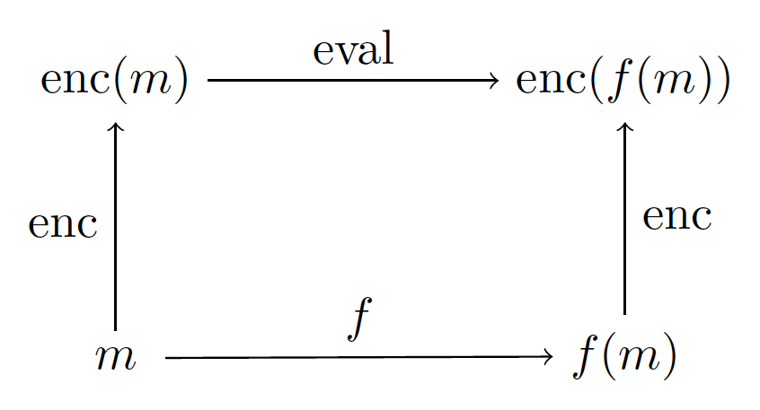

Brainfreeze
FHE
Fully Homomorphic Encryption is this hip new thing all the cool crypto kids are talking about. It lets you operate on encrypted ciphertexts - so that anyone can compute the encrypted result of some function without ever knowing what the inputs really were (or even what the output really was). 
People are pretty excited about this because it promises some wild applications, like truly secure cloud computing or truly anonymous smart contracts.
FHC
Fully Homomorphic Computing is something I just made up to describe fully homomorphic programming languages. This is when the function that we homomorphically evaluate is the eval function itself. The input is encrypted code, and the output is the encrypted result of running that code. But the computer itself never actually knows what it's executing!
Brainfreeze is a fully homomorphic computer for the Brainfuck language. This means it takes encrypted Brainfuck programs as an input, runs them, and returns their encrypted output, without learning anything from the entire process. It's built on the TFHE library, and to the best of my knowledge, it's is the first actual implementation of fully homomorphic computing.
This is probably because FHE is excruciatingly slow: with TFHE, each boolean operation on two encrypted bits takes 10-20 milliseconds to evaluate. With an 8-bit architecture and 16 bytes of RAM, Brainfreeze sputters along at around 0.1 hertz (1 cycle every 10 seconds) on a 2017 Macbook Pro. 😬
The size of RAM affects speed because the data pointer is encrypted (along with every other register). Since we never actually know where the data pointer points, or which instruction we're executing, Brainfreeze has to execute every possible operation on every possible memory address on every clock cycle, and pretend to update each one. This is a general problem with FHE: every path through your control flow has to be explored and recombined at the end. There's no way around it without leaking information about your inputs; we must surrender to the Tyranny of Exponential Branch Unrolling.
FHE efficiency has jumped several orders of magnitude in the last few years, which will hopefully continue. It's also theoretically possible to sidestep exponential branch unrolling if you're willing to leak a little bit of information about your program's runtime. So FHC is comically useless for now, but there's no better time to start thinking about it.
Brainfreeze
Brainfreeze is a stack of three abstraction layers:
- A Python wrapper for the TFHE library. This is
tfhe.pyandtfhe_utils.py. They're written usingctypesand is probably the most useful part of this whole rigmarole. - A collection of homomorphic circuits (adders, muxes, RAM, CPU) built from TFHE gates. They inherit from the
Circuitclass incircuits.py. The CPU design is inspired by this one. - A minimal Brainfuck computer. See it in action in
main.py.
You can run it like this:
- Install TFHE.
-
Clone this repo and edit
tfhe.pyandmakefileto reference the right version of TFHE. "Isn't this what makfiles are supposed to replace?"
Yes. The defaults are forlibtfhe-spqlios-fma, which is what you get when you compile TFHE with the-DENABLE_SPQLIOS_FMA=onflag. If you've already installed TFHE and don't remember what version it is, you can probably find it withls /usr/local/lib | grep libtfhe. -
Compile the Python wrapper.
This
tfhe_io.cwrapper is actually just for I/O. The TFHE functions to read and write ciphertexts and gate parameters to and from files takesFILE*objects, which I can't figure out how to pass into actypesfunction in Python. Sotfhe_io.chas wrapper functions that take file paths as string literals, which gets compiled and then dynamically loaded intfhe_utils.py. If anyone has a real solution to this, please tell me.git clone https://github.com/joeltg/brainfreeze cd brainfreeze make
-
Profit.
from circuits import * secret = create_secret_keyset(GATE_PARAMS) cloud = get_cloud_keyset(secret) TRUE.eval(cloud) FALSE.eval(cloud) # Export the encrypted code to a file with `write_to_path(name, code)`. # Or import one with `code = load_from_path(name)`. # `name` must be a directory name in the current directory. code = compile_code("++[-]", secret) computer = Computer(code) computer.init(cloud) computer.eval(cloud)